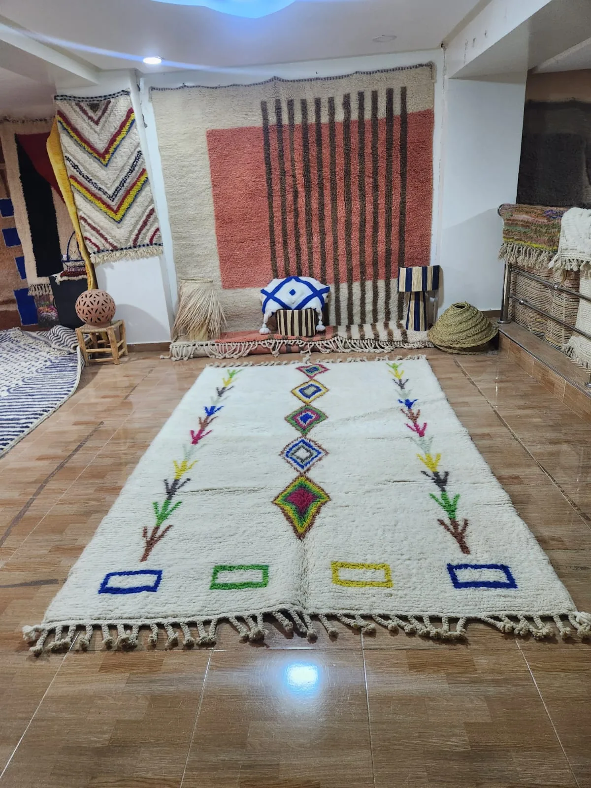

The seven styles, at a glance
Every style below has its own full guide linked from the card — this section is the map, not the whole territory.
Beni Ourain
Ivory wool, high pile, geometric diamond lattice. The style most people picture when they hear "Moroccan rug."
Read the guide →Boujaad
Bold, dense colour and loose tribal geometry from the Rehamna plains. Vintage character, never subtle.
Read the guide →Mrirt
Often called "the modern Beni Ourain" — the same high pile, paired with a bolder, more saturated palette.
Read the guide →Kilim
Flat-woven, no pile, fully reversible. Built for kitchens, hallways, and anywhere chairs need to slide freely.
Read the guide →Contemporary
Modern abstract designs, still hand-knotted by the same weavers behind the traditional styles.
Read the guide →Azilal & Boucherouite
Two free-form traditions — improvised symbols on wool, and colour built from recycled fabric.
Read the guide →The one distinction that matters more than style: pile vs. flat-weave
Before choosing a style, it's worth understanding the one structural split that cuts across all of them. A pile rug — Beni Ourain, Boujaad, Mrirt, most Contemporary and Azilal pieces — is built from individual hand-tied knots, giving it thickness, softness, and warmth underfoot. A flat-weave — Kilim, and most Boucherouite — has no knots at all; the pattern is woven directly into the structure, giving a thinner, firmer, fully reversible rug. Neither is better. A pile rug suits a living room or bedroom where softness matters. A flat-weave suits a kitchen, hallway, or dining room where chairs need to move and spills need to be dealt with fast.
"Every genuine Moroccan rug is hand-made by a single weaver, which is also why no two are ever quite the same — buying one means buying the specific piece in front of you, not a product line."

How to buy with confidence
Three things matter more than anything else once you've picked a style: authenticity, size, and price.
Authenticity
Machine-made "Moroccan style" rugs are common in mass retail, and they're not the same product. Our full authentication guide covers the four checks that matter — knot density, backing, weight, and colour variation — in detail.
Size
Measure the space before you fall in love with a rug. As a rough starting point: a living room rug should extend at least under the front legs of every seat facing it; a bedroom rug should extend 45–60cm beyond the sides of the bed; a dining rug needs enough clearance that chairs stay on it even pulled fully out. Our full sizing guide covers every room in detail.
Price
"How much should this cost" is nearly impossible to answer in the abstract — it depends entirely on size, format, and pile density, not style. As a real anchor across Tiziri's own catalogue: standard made-to-order sizes run $650–$2,250, runners run $340–$680, and one-of-a-kind ready-to-ship pieces are priced individually, typically $1,050–$1,950. Our full pricing guide breaks this down by size.
Caring for a rug that should last decades
A genuine hand-knotted wool rug is built to outlast furniture, not just survive it. Our wool cleaning guide covers routine care and stain response — the short version is: vacuum without a beater bar, blot rather than rub any spill, and have it professionally washed every 12–18 months rather than machine-washed at home.
Browse the full collection — 8 styles, every rug hand-selected and priced by size.
Shop All RugsWhere to go from here
If you already know roughly what you want, jump straight to that style's guide above — each one covers origin, construction, styling, authentication tells specific to that weave, and real pricing by size. If you're still deciding, the single fastest filter is pile vs. flat-weave: soft and warm, or thin and durable. Everything else follows from that first choice.